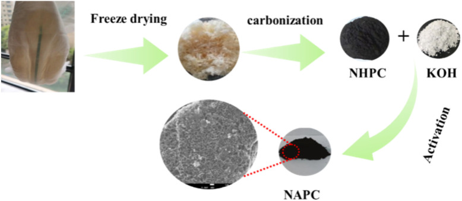
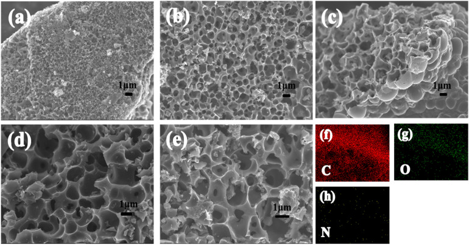
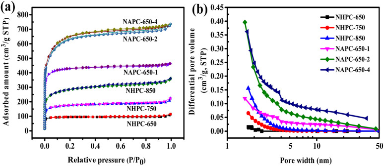
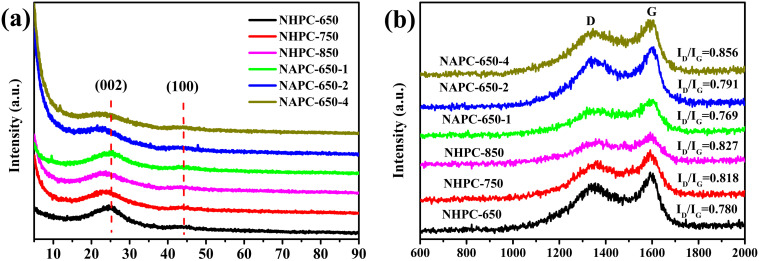
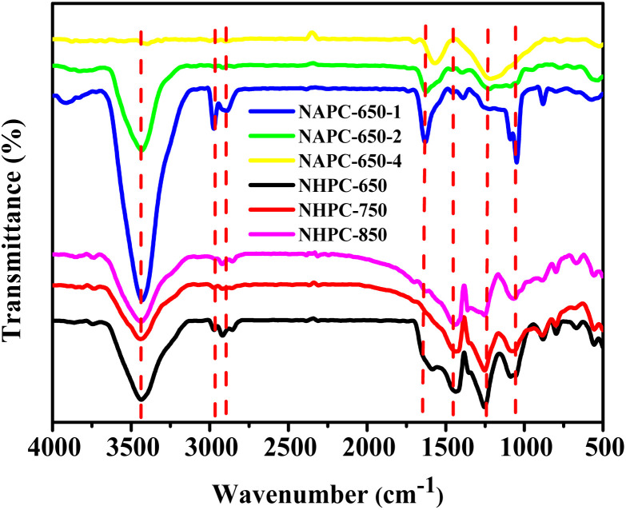
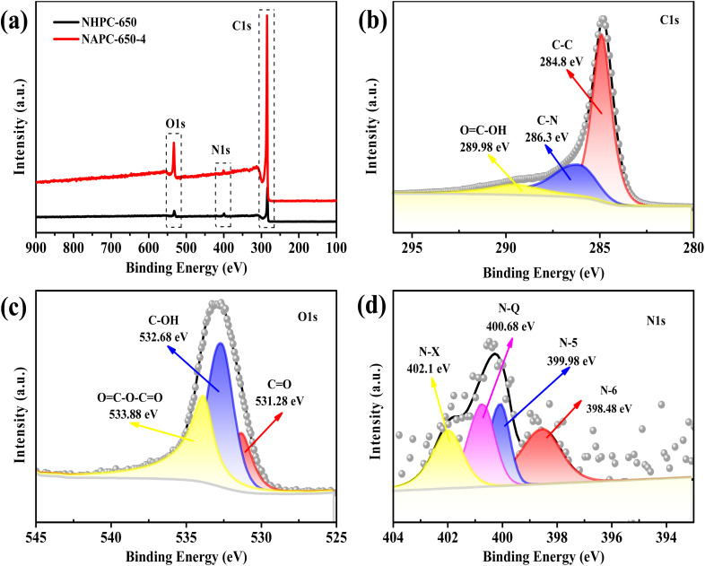
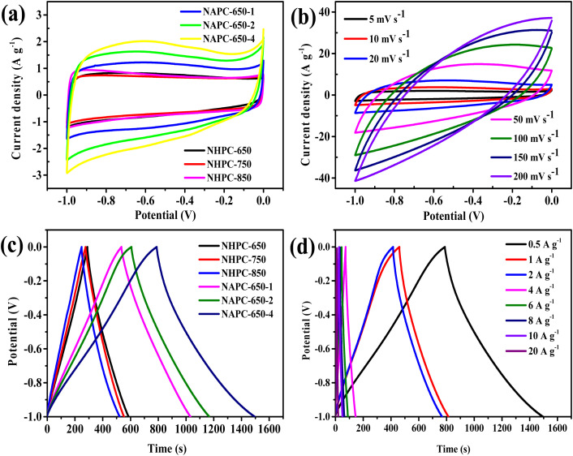
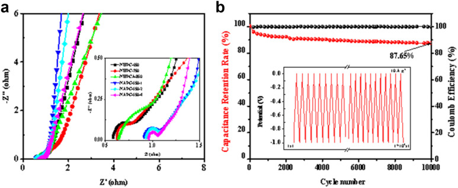
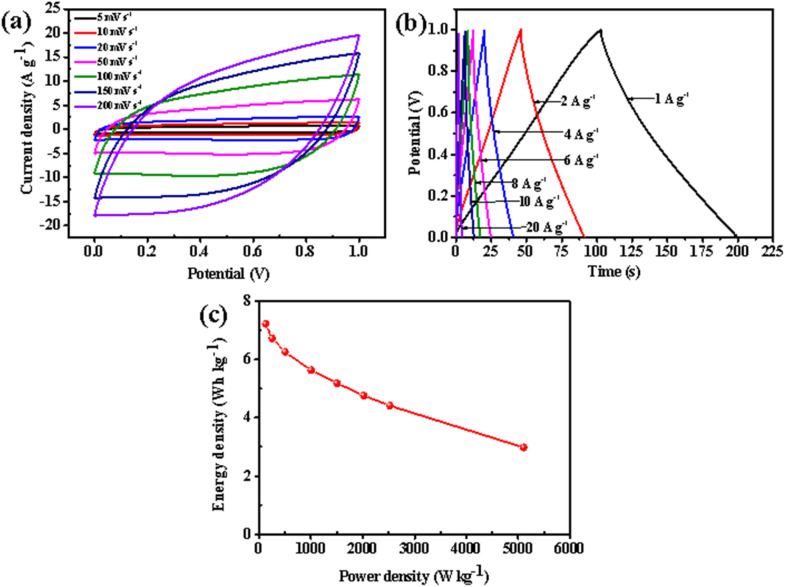

In situ nitrogen-doped porous carbon from waste baby diapers as a high-performance supercapacitor electrode material
本地阅读版：出版社提交的完整 XML 正文与原图。排版由本项目生成；原始 XML 为证据。不是出版社 PDF。
DOI: 10.1039/d5ra00450k
Abstract
This study presents a method for the synthesis of nitrogen-doped porous carbon (NAPC) from nitrogen-rich superabsorbent material (SAP) found in waste baby diapers for application as an electrode material for high-performance supercapacitors. Through rapid pyrolysis and KOH activation, the resulting NAPC material exhibited a high specific surface area and abundant microporous structure, which promoted efficient ion transport and energy storage. Electrochemical testing demonstrated that the NAPC-650-4 sample achieved a specific capacitance of 353 F g−1 at a current density of 1 A g−1 in a 6 M KOH electrolyte, with a capacitance retention rate of 87.65% after 10 000 cycles. This finding indicates the material's excellent rate capability and cycle stability. Furthermore, the symmetric supercapacitor assembled from NAPC-650-4 delivered an energy density of 7.22 Wh kg−1 at a power density of 125 W kg−1, which showed its potential for high-power applications. This research not only provides a feasible green solution for recycling waste diapers but also a new approach for the development of high-performance electrode materials.
Abstract
This study presents a method for the synthesis of nitrogen-doped porous carbon (NAPC) from nitrogen-rich superabsorbent material (SAP) found in waste baby diapers for application as an electrode material for high-performance supercapacitors.
Introduction
P0001
The rapid development of global industrialization and rapid population growth have led to the increased demand for energy.1,2 The overexploitation and utilization of traditional fossil fuels, such as oil, coal, and natural gas, have led to energy depletion and a series of environmental problems.3,4 Large-scale use of existing renewable energy, such as solar energy, wind energy, and geothermal energy, is unfeasible due to the disadvantages of complex technical routes and uneven distribution, and they still cannot completely replace traditional fossil fuels.5–7 Therefore, supercapacitors with high power and energy density, long cycle life, and excellent reversibility provide a promising method for the rapid storage of intermittent renewable energy.8–10
P0002
Based on their different energy storage mechanisms, supercapacitors fall under two types: electric double-layer capacitors (EDLCs) and pseudo-capacitor supercapacitors.11,12 Pseudo-capacitor supercapacitors generate farad capacitance through reversible redox reaction of electrode/electrolyte ions, which realizes energy storage and conversion, whereas EDLCs store energy through electrostatic charge adsorption at the electrode/electrolyte interface.12 The pore structure and surface area of electrode materials are the key factors in determining the performance of EDLC.13
P0003
Porous carbon material has become an important research object in the field of electrode materials due to its advantages of light weight, high specific surface area (SSA), developed pore structure, chemical stability, and high thermal stability.13,14 Its high cycle stability and low economic cost imply the possibility of manufacturing more efficient super-capacitors to solve the growing energy problem.13 However, supercapacitors made of carbon materials usually have an electrode with a low specific capacitance; the electrochemical performance of EDLC is usually improved through the introduction of heteroatoms into the carbon frame.15 N doping increases the hydrophilicity and conductivity of carbon materials and promotes the maintenance of their excellent cycling performance.16 P doping can considerably improve the conductivity of carbonaceous materials by several orders of magnitude.17 The commonly used heteroatom doping method is used to treat carbon materials with urea or phosphoric acid under hydrothermal conditions. However, this method is not environmentally friendly nor economically feasible because it requires complex equipment and may release potential secondary pollutants in the process.
P0004
The main components of disposable diapers include superabsorbent polymer (SAP), polypropylene (PP) nonwoven fabric, polyethylene (PE) film, and a small amount of cellulose, with SAP and PP nonwoven fabric accounting for the majority of the mass. The utilization of waste baby diapers as a precursor for synthesizing nitrogen-doped porous carbon (NAPC) is driven by their unique composition and environmental sustainability. The nitrogen-rich superabsorbent polymers (SAP), primarily sodium polyacrylate, which inherently absorb nitrogen-containing compounds like urea from urine. This natural nitrogen source enables in situ doping during pyrolysis, eliminating the need for external chemical dopants, which is a significant departure from conventional methods that rely on toxic reagents (e.g., urea or phosphoric acid). The SAP, combined with urine as an intrinsic nitrogen reservoir, undergoes rapid pyrolysis and KOH activation to yield a hierarchical porous structure with high specific surface area (2399 m2 g−1) and abundant micropores, facilitating efficient ion transport and charge storage.
P0005
The innovation of this study lies in the dual benefits of waste valorization and process simplification. By repurposing discarded diapers, this approach addresses environmental pollution while reducing raw material costs. The in situ nitrogen doping mechanism integrates waste-derived nitrogen into the carbon matrix, forming pyridinic-N, pyrrolic-N, and graphitic-N configurations, which enhance conductivity and pseudocapacitance.13 The resulting NAPC-650-4 exhibits exceptional electrochemical performance, achieving a specific capacitance of 353 F g−1 at 1 A g−1 and 87.65% capacitance retention after 10 000 cycles. This method demonstrates a sustainable pathway for transforming hazardous waste into high-performance supercapacitor electrodes, combining ecological responsibility with advanced material engineering.
Experimental
Materials and reagents
P0006
Zinc nitrate hexahydrate (Zn(NO3)2·6(H2O), AR), 2-methylimidazole (C4H6N2, AR), ruthenium chloride trihydrate (RuCl3·3H2O, AR), copper chloride dihydrate (CuCl2·2H2O, AR), acetylene black, and polytetrafluoroethylene (PTFE) were provided by Aladdin Biochemical Technology Co., Ltd, Shanghai, China. The other chemical reagents and materials used in this study included anhydrous ethanol (CH3CH2OH, AR) and nickel foam used to prepare the working electrodes, the methyl alcohol (CH3OH, AR) as the auxiliary solvent procured from Sinopharm Chemical Reagent Co., Ltd. The equipment used in this study included a tubular furnace (CHY-1200, Henan Chengyi Equipment Technology Co., Ltd), and a press machine (YLJ-5T, Hefei Kejing Material Technology Co., Ltd).
P0007
Waste baby diapers were collected from a confinement center in Kaifeng, Henan. These diapers are rich in nitrogen due to the absorbed urine in their superabsorbent polymers, and their main chemical components include sodium polyacrylate, cellulose, polypropylene, and polyethylene. Before use, the waste baby diapers were cut up, and yellow super absorbent particles were removed from the double-layer diaphragm.
Preparation of porous carbon
P0008
The obtained super absorbent material was then transferred to a freeze dryer for three days for moisture removal (Fig. 1). Afterward, the freeze-dried raw materials were pyrolyzed in a tubular furnace under N2 (2 °C min−1) atmosphere at 650 °C for 3 h and then ground to powder after cooling to room temperature. The precarbonized product was washed repeatedly with dilute hydrochloric acid (0.1 mol L−1) to remove metal impurities and with deionized water until the leachate became neutral. Finally, the product was washed with absolute alcohol and then dried overnight at 100 °C in an oven to obtain the final product. Based on various pyrolysis temperatures (650 °C, 750 °C, and 850 °C), the obtained precarbonized products were named NHPC-650, NHPC-750, and NHPC-850, respectively. Herein, NHPC represents nitrogen-doped hierarchical porous carbon.
P0009
Schematic of the preparation of porous carbon from diapers.
P0010
Then, the obtained precarbonized product and KOH were mixed at a desired weight ratio and heated in a tubular furnace at a heating rate of 2 °C min−1 to the target temperature (650 °C, 750 °C, or 850 °C). The activation was carried out at the target temperature for a specific time (3 h) under a nitrogen atmosphere. The temperature, activation time, and KOH-to-carbon ratio were varied to investigate their influence on the properties of the activated carbons. After activation, the samples were washed sequentially with 1 mol per L HCl, hot deionized water, and absolute ethanol to ensure the complete removal of residual alkali. The washed samples were then dried overnight at 120 °C in a vacuum oven. Then, the final activated carbons were obtained. Given that the weight ratio of KOH/carbon is one of the most crucial parameters in KOH activation, a series of samples was prepared at KOH/carbon ratios of 1, 2, and 4, and the resultant products were denoted as nitrogen-doped porous carbon (NAPC)-X-Y (where X and Y represent the pyrolysis temperature and KOH/carbon ratio, respectively).
Characterizations
P0011
The crystallographic structures of all samples were analyzed using X-ray diffraction (XRD; Bruker D8 Advance) with Cu Kα radiation (λ = 1.5406 Å). The diffraction patterns were collected in the 2θ range of 5–90° with a scan rate of 2° min−1. The micro surface morphology of the samples was examined using a transmission electron microscope (TEM; JEM-2100F) and a field-emission scanning electron microscope (SEM; JSM-7610F), both of which provided high-resolution imaging to assess the porous structure and surface characteristics. Raman spectra were recorded using a Renishaw inVia Raman spectrometer with a 532 nm laser, and the spectral range was from 100 to 3000 cm−1. The surface elemental composition and chemical state of the experimental samples were analyzed via X-ray photoelectron spectroscopy (XPS; AXIS ULTRA), with the binding energy referenced to the C 1s peak at 284.6 eV. The pore structure of the samples was analyzed using an automatic surface area and porosity analyzer (Micromeritics ASAP 2020). The specific surface area (SSA) was calculated using the Brunauer–Emmett–Teller (BET) method, and the micropore area was determined via the t-plot method. The density functional theory was used to calculate the ratio of micropore area and explore the relationship among the surface area, pore volume, and pore width distribution.
Electrochemical tests
P0012
All electrochemical performances were measured on a CHI 760D electrochemical workstation at room temperature. The calomel electrode was used as the reference electrode, the platinum wire as the counter electrode, and the 6 M KOH solution as the electrolyte. The work electrode was prepared by mixing 80% weight of the active substance, 10% of the conductive agent (carbon black), and 10% of the adhesive (polytetrafluoroethylene (PTFE)) in a mortar, followed by the addition of a small amount of absolute ethanol, and the materials were ground until they were ground into sheets. The resulting mixture was uniformly coated onto a nickel foam substrate (1 × 1 cm2). The sheets were pressed in a tablet press under 10 MPa pressure and dried at 60 °C in vacuum for 12 h to obtain a working electrode. A similar preparation method was used for the working electrode in the two-electrode system. The only difference was that the active substance ground into sheets was coated on a round nickel foam with a diameter of 1.1 cm, and cellulose membrane was selected for symmetrical capacitor assembly.
P0013
Cyclic voltammetry (CV), constant current charging and discharging (GCD), and alternating current impedance (EIS) were used to test the electrochemical performance of the samples. The cyclic volt ampere curve (CV) was obtained through scanning at a voltage window of −1.1–1.1 V, and the scanning rate was between 5 and 200 mV s−1. The specific capacitance C (F g−1) of the working electrode under the three electrodes was calculated as follows:where I refers to the discharge current (A), ΔT denotes the discharge time (s), ΔV indicates the voltage difference (excluding voltage drop) during discharge, and m corresponds to the mass of the electrode material.
P0014
For the two-electrode system, the specific capacitance C (F g−1) of the symmetric supercapacitor can be calculated using the following formula:
P0015
The power density P (W kg−1) and energy density E (Wh kg−1) of the material were calculated as follows:
Results and discussion
Material characteristics
P0016
The morphology and microstructure of the samples were characterized via SEM (Fig. 2). As displayed in Fig. 2a, given the decomposition of nitrogen-containing substances, the NHPC-650 surface formed a rich pore structure during pyrolysis. The SEM image of NHPC-650 activated by KOH also showed a block structure (Fig. 2b and c). The morphology of NAPC-650-4 remained unchanged during the activation process. This indicates that the activation process did not significantly alter its initial structure. The activation mechanism of SAP with KOH was followed. The activation mechanism of KOH is as follows: KOH is reduced to K2CO3 and metal K at 400–600 °C.18–20 When the temperature rises above 600 °C, K2CO3 is pyrolyzed into K2O and gas, which realizes the high microporosity of carbon materials. Fig. 2d reveals the overall pore structure, highlighting a relatively smooth surface with larger pores, while Fig. 2e demonstrates the presence of more refined, interconnected pores that form a more continuous network. The comparison between Fig. 2d and e emphasizes how KOH activation progressively refines the pore structure, resulting in more favorable conditions for ion transport. However, with the increase in the KOH content, the material exhibited a damaged surface morphology to a certain extent, which was due to the strong corrosivity of KOH.20Fig. 2f–h show the successful incorporation of C/N/O into the carbon skeleton.
P0017
SEM images: (a) NHPC-650, (b) NAPC-650-1, (c) NAPC-650-2, (d and e) NAPC-650-4, and (f–h) elemental mapping of NAPC-650-4.
P0018
The highly porous structure of carbon materials was further determined via N2 adsorption/desorption isothermal analysis. Meanwhile, a noticeable hysteresis loop at higher relative pressures further confirmed the existence of mesopores and macropores, indicating a hierarchical pore structure. As shown in Fig. 3a, all the samples exhibited type I and IV isotherms with a steep increase in N2 adsorption at low relative pressures (P/P0 < 0.1), and this finding indicates microporous carbon characteristics.21 The narrow pore size distributions of all the samples revealed pore diameters distributed between 1–4 nm, with micropores (<2 nm) for abundant active sites and mesopores (2–50 nm) for rapid ion transport (Fig. 3b). This hierarchical pore structure, consisting of micropores, mesopores, and macropores, significantly improves electrochemical performance by enhancing ion transport and increasing active site accessibility.22,23Table 1 summarizes the calculated total SSAs and total/micropore pore volumes. The BET SSA of NAPC-650-4 was 2399 m2 g−1, which is higher than that of NAPC-650-2 (2299 m2 g−1) and NAPC-650-1 (1277 m2 g−1). This phenomenon is primarily attributed to the activation effect of KOH, which promotes the formation of abundant micropores through redox reactions with the carbon framework. These micropores significantly increase the specific surface area, providing more active sites for ion adsorption and storage. As a result, ion transport becomes more efficient, leading to an enhanced specific capacitance in supercapacitor applications.24 With the addition of KOH, the isotherms of the NAPC samples exhibited a slight hysteresis loop, which may be attributed to the strong corrosive nature of KOH. This corrosivity can partially collapse or distort the pore walls during activation, leading to minor structural damage and changes in pore connectivity.
P0019
Carbon materials with various KOH activation ratios: (a) nitrogen adsorption/desorption isotherms and (b) differential pore volume vs. pore width.
P0020
Physicochemical properties of carbon materials with different KOH activation ratios
P0021
Sample S BET (m2 g−1) S micro (m2 g−1)NHPC-650368340NHPC-750655.9505.09NHPC-8501031.78660.20NAPC-650-116781625NAPC-650-222391507NAPC-650-423992293
P0022
XRD and Raman spectroscopy were used to analyze the crystallite structure and order degree of carbon materials. As shown in Fig. 4a, the XRD patterns of all carbon materials showed evident upwarping when the diffraction angle was approximately 5–10°, which indicates that the materials lacked an ordered mesoporous structure.25,26 The XRD diagram shows that the carbon material had two broad diffraction peaks at approximately 23.7° and 43°, which are consistent with the (002) and (100) diffraction planes, respectively. Compared with that of NHPC, the first peaks of NAPC-650-2 and NAPC-650-4 shifted slightly to the left and weakened, and this result may be due to the destruction of the microcrystalline structure of the materials and their disorder during activation, which led to the decreased27 graphitization and crystallinity of carbon materials. This result is also supported by the Raman diagram. As displayed Fig. 4b, two peaks were observed at 1340 cm−1 (D-band) and 1580 cm−1 (G-band) for all samples.28 This finding may be due to the in situ substitution of nitrogen or the existence of vacancies in almost all pyrolytic carbon materials. The D-band (ID) and G-band (IG) represent disordered carbon and graphitic carbon, respectively, and the ID/IG ratio reflects the degree of structural disorder in carbon materials. An ID/IG value less than 1 typically indicates that the carbon material is primarily graphitic with relatively few defects. As the pyrolysis temperature increases, the ID/IG ratio of NHPC-650 (0.780) becomes slightly higher, suggesting a mild increase in structural disorder. For the KOH-activated samples, the ID/IG values of NAPC-650-1, NAPC-650-2, and NAPC-650-4 are 0.769, 0.791, and 0.856, respectively. The gradual increase in ID/IG ratio with higher KOH content implies that the activation process introduces more defects and amorphous regions into the carbon framework. This trend is likely due to the intensified chemical etching effect of KOH, which disrupts the graphitic structure and increases disorder within the carbon matrix.
P0023
Carbon materials prepared at different temperatures and KOH activation ratios: (a) XRD patterns and (b) Raman spectra of pyrolytic carbon materials.
P0024
A Fourier transform infrared spectrometer (FT-IR) was used to characterize the existence of surface functional groups in the carbon materials. Fig. 5 shows that all the materials had a strong absorption peak at approximately 3430 cm−1, which corresponds to the tensile vibration of N–H/O–H. In addition, O–H possibly originated from surface hydroxyl and water molecules. The absorption peaks at 2925 and 2890 cm−1 corresponded to the asymmetric and symmetric stretching vibrations of C–H in the –CH2 functional group, respectively.29 In addition, the signal of aromatic C <svg xmlns="http://www.w3.org/2000/svg" version="1.0" width="13.200000pt" height="16.000000pt" viewBox="0 0 13.200000 16.000000" preserveAspectRatio="xMidYMid meet"><metadata> Created by potrace 1.16, written by Peter Selinger 2001-2019 </metadata><g transform="translate(1.000000,15.000000) scale(0.017500,-0.017500)" fill="currentColor" stroke="none"><path d="M0 440 l0 -40 320 0 320 0 0 40 0 40 -320 0 -320 0 0 -40z M0 280 l0 -40 320 0 320 0 0 40 0 40 -320 0 -320 0 0 -40z"/></g></svg> C appeared at 1610–1650 cm−1, which indicates the presence of a sp2 hybrid honeycomb lattice.30 The absorption peaks at 1430 and 1240 cm−1 referred to the stretching vibrations of aromatic heterocyclic C–N and oxygen-containing functional group C–OH, respectively. The absorption band at 1010–1106 cm−1 was caused by the tensile vibration of the oxygen-containing functional group C–O–C. The N–H deformation vibration band of the amine group in the spectrum appeared at 800 cm−1, which indicates the successful incorporation of the N atom into the carbon skeleton. Therefore, FT-IR results reveal that the surface of the synthesized carbon materials contained rich oxygen and nitrogen functional groups during the carbonization process.
P0025
FT-IR spectra of carbon materials prepared at different temperatures and KOH activation ratios.
P0026
Elemental analysis of the carbon materials prepared from raw materials under different conditions indicates that both temperature and the amount of activator significantly influence the nitrogen content of the materials (Table 2). After pretreatment, the nitrogen content in the raw materials is 2.02%, but the nitrogen content slightly increases after pyrolysis, suggesting that during pyrolysis, nitrogen not only serves as a protective gas but also acts as a nitrogen source for doping the raw materials. When the pyrolysis temperature rises to 850 °C, the nitrogen content slightly decreases due to the increased release of nitrogen-containing substances. Similarly, as the amount of activator increases, the nitrogen content in the carbon materials tends to decrease, which is attributed to the corrosion of the carbon skeleton by KOH, leading to the release of nitrogen-containing substances.
P0027
Elemental analysis of the carbon materials prepared from raw materials under different conditions
XPS was applied to characterize the elemental composition and surface groups of the prepared materials. The XPS full spectrum of NHPC-650 and NAPC-650-4 in Fig. 6a exhibited three peaks, namely, C 1s (284.7 eV), N 1s (399.8 eV), and O 1s (532.1 eV), which implies that C, N, and O atoms were successfully embedded in the carbon skeleton. The chemical properties of C, N, and O were further studied through high-resolution spectroscopy. As displayed in Fig. 6b–d, the XPS spectrum of high-resolution O 1s of NAPC-650-4 can be fitted into two kinds of signals, with binding energies of 532.47 and 533.68 eV, respectively, designated as CO and OC–O bonds. The high-resolution C 1s spectrum of NAPC-650-4 was further deconvoluted into three peaks at 284.88, 286.3, and 289.98 eV, which can be attributed to C–C, C–OH/C–N, and OC–OH bonds, respectively. Three peaks can be obtained after fitting of the XPS spectra of N 1s, namely, those observed at 398.44, 400.5, and 402.93 eV, which corresponded to pyridine-N, pyrrole-N, and pyridine N oxides, respectively.31,32 The nitrogen functional groups of various configurations in the carbon grid exhibited different characteristics. Electronegative pyrroline-N and pyrrole-N can be used as electrically active sites to generate pseudo-capacitors, and graphitized N and pyridine N oxide with a positive charge can improve the electron transmission capacity, which improves the storage energy of devices.33,34
P0030
(a) XPS survey spectrum of NHPC-650 and NAPC-650-4 samples. (b) C 1s peak spectrum of NAPC-650-4 sample. (c) O 1s peak spectrum of NAPC-650-4 sample, and (d) N 1s peak spectrum of NAPC-650-4 sample.
Electrochemical characterization
Three-electrode test
P0031
In 6 M KOH solution, the electrochemical performances of NAPC and NHPC materials were evaluated via CV, GCD, and EIS. Fig. 7a shows the CV curves of NAPC and NHPC materials at 5 mV s−1. The quasi rectangular CV curve profile reveals that it is an ideal candidate material for EDLC.35 In general, at a high scanning rate, the CV profile of the electrode material usually deviates from the ideal rectangular shape due to polarization. However, in this work, until the scanning rate was increased to 200 mV s−1, the CV curve maintained its symmetrical rectangular shape, which is the most ideal shape of EDLC.36 This finding reflects the excellent cycle capacity of capacitors based on the NAPC-650-4 electrode under a high current density Fig. 7b. The activation temperature plays a crucial role in determining the electrochemical capacitance performance, as higher activation temperatures typically lead to increased surface area and improved porosity, which are essential for better capacitance.37 Comparison of the area of CV contour revealed that the CV rectangular area of the NAPC material, which presented an ideal capacitive performance, is considerably larger than that of the NHPC material, which was due to its excellent specific surface area and porous structure.
P0032
(a) CV curves of carbon materials in a three-electrode system; (b) CV curves of NAPC-650-4 at different scan rates; (c) constant current charge–discharge curves of carbon materials; (d) CV curves of NAPC-650-4 at various current densities.
P0033
Fig. 7c and d reveal the charge–discharge curves of NAPC and NHPC electrodes under different current densities. With the increase in the current density, typical triangular and highly symmetrical characteristics indicate that these samples had a good rate performance and can adapt to the charge–discharge process under large current densities.38 NAPC-650-4 exhibited the longest charge discharge time, good electrochemical reversibility, and electrochemical performance. Based on the charge discharge curve, the specific capacitance of NAPC and NHPC electrodes was calculated. At the current density of 1 A g−1, NAPC-650-4 (353 F g−1) manifested a higher specific capacitance than NHPC-650 (140 F g−1). This high capacitance was mainly due to the synergistic effect between interconnected hierarchical porous structures, which greatly improved the mass transfer during charge storage.39 The increased surface area and enhanced porosity of the NAPC-650-4 material provide greater surface contact with the electrolyte, facilitating efficient ion storage and leading to higher capacitance values. At 10 A g−1, the specific capacitance of NAPC-650-4 remained at 250 F g−1, and the capacitance retention rate was 87.65%, which implies a high rate performance.
P0034
Furthermore, electrochemical impedance spectroscopy was conducted to evaluate the capacitive properties of carbon materials at the frequency range of 0.01 Hz to 100 kHz under an open-circuit potential. As displayed in Fig. 8a, all Nyquist plot in the low-frequency region exhibited a vertical line, which denotes that the material had an ideal capacitive behaviour. In the high-frequency region, the X-axis intercept represented the series equivalent resistance (Rs), which is related to the resistance of electrode materials and electrolytes; the diameter of the semicircle is the interfacial charge transfer resistance (Rct), which is related to the electric double layer and Faraday oxidation–reduction reaction.40 In the Nyquist plot, the semicircle of NAPC-650-4 was the smallest, and the Rct was 0.126 Ω, which implies excellent ion response. The smaller Rct of NAPC-650-4 indicates its enhanced conductivity and rapid charge transfer at the electrode–electrolyte interface, which can be attributed to its highly porous, interconnected structure. The cycle stability of all samples was obtained through 10 000 constant current charge–discharge tests, at a current density of 10 A g−1 (Fig. 8b). The NAPC-650-4 electrode maintained a high retention ratio of 87.65% after 10 000 cycles and the Coulomb efficiency is 96–100%, which proves that it is a very stable electrode material. This finding can be ascribed to the highly interconnected three-dimensional porous structure of NAPC-650-4 electrode, which facilitated the rapid migration and diffusion of electrolyte and ions. In addition, the rich pore structure provided more space for charge storage. The higher SSA of nitrogen-containing groups improved the wettability of the material surface and provided more active sites for energy storage. Therefore, it has excellent rate performance as the electrode material of capacitors.
P0035
(a) Nyquist plot of carbon materials in a three-electrode system; (b) charge–discharge test results of NAPC-650-4 at a current density of 10 A g−1 after 10 000 cycles.
Two-electrode test
P0036
To further evaluate the potential application of NAPC, we assembled a symmetric supercapacitor NAPC-650-4//NAPC-650-4 in a two-electrode system using 6 M KOH electrolyte. The electrochemical capacitance performance was evaluated through CV, GCD, and power density. Fig. 9a shows the CV curve of the symmetric supercapacitor NAPC-650-4//NAPC-650-4. With the increase in the scanning rate, the shape of the CV curve approximated a rectangle, which corresponds to a good reversible capacitance behaviour. In addition, the GCD curve was measured at different current densities, and the results reveal an asymmetric triangle without an evident voltage drop (Fig. 9b). The specific capacitance calculated on the GCD curve was as high as 208.1 F g−1, and the current density was 0.5 A g−1. The Ragone diagram shows the power density and energy density of the symmetric supercapacitor (Fig. 9c). The energy density can reach 7.22 Wh kg−1 at the power density of 125 W kg−1. With the increase in the power density, the energy density of the electrode gradually decreased. Under the power density of 5.1 kW kg−1, the energy density remained at 3.12 Wh kg−1, which proves that NAPC-650-4 electrode had an excellent electrochemical performance. At lower current densities, electrode materials often exhibit higher specific capacitance and energy density. As shown in Table 3, compared with tea-waste (332 F g−1 at 1 A g−1), NAPC-650-4 achieves comparable capacitance (353 F g−1) at a higher current density (1 A g−1), indicating better rate performance. Moreover, NAPC-650-4 is low-cost and sustainable, yet delivers competitive electrochemical performance.
P0037
Electrochemical performance of NAPC-650-4 in a two-electrode system: (a) CV curves, (b) GCD curves, and (c) Ragone plot.
P0038
Comparison of SSA and electrochemical properties between CHNC-700-4-25 and other biomass electrode materials
P0039
Biomass-derived electrode materialsSSA (m2 g−1)Specific capacitance (F g−1)Current density (A g−1)Energy density (Wh kg−1)Power density (W kg−1)Cycle stability (%)Ref. NAPC-650-4 2399 353 1 7.22 125 87.65/10 000 cycles This work ZC-Cu859.78222.120.11.61485.1299.42/10 000 cycles 41 Opc800 2004306.60.5383.3Not specified81.9/3000 cycles 42 Tea-waste16103321Not specifiedNot specified97.80/10 000 cycles 43 SAC-11098.5332111.88594/10 000 cycles 44 NMC-0.5208826312.9740096.07/10 000 cycles 45
Conclusion
P0040
We used a simple method to synthesize a material with interconnected pore structure and large SSA from discarded baby diapers, which can be used as electrode materials for supercapacitors. The effective ion transport paths and a large number of active sites enable NAPC-650-4 to exhibit excellent electrochemical performance. As an electrode material, the NAPC-650-4 sample achieved a specific capacitance of 353 F g−1 at a current density of 1 A g−1 in a 6 M KOH electrolyte. In addition, the capacitance retention reached 87.65% after 10 000 cycles at a current density of 10 A g−1, which indicates excellent rate capability and cycle stability. Furthermore, the symmetric supercapacitor assembled from NAPC-650-4 delivered an energy density of 7.22 Wh kg−1 at a power density of 125 W kg−1, which showcased its potential for high-power applications. More importantly, this work opens up a new avenue for the disposal and reuse of discarded baby diapers, which is important to the development of environmental resources.
Conflicts of interest
P0041
There are no conflicts to declare.
原文图表（含文末 floats-group）

Fig. 1Schematic of the preparation of porous carbon from diapers.

Fig. 2SEM images: (a) NHPC-650, (b) NAPC-650-1, (c) NAPC-650-2, (d and e) NAPC-650-4, and (f–h) elemental mapping of NAPC-650-4.

Fig. 3Carbon materials with various KOH activation ratios: (a) nitrogen adsorption/desorption isotherms and (b) differential pore volume vs. pore width.

Fig. 4Carbon materials prepared at different temperatures and KOH activation ratios: (a) XRD patterns and (b) Raman spectra of pyrolytic carbon materials.

Fig. 5FT-IR spectra of carbon materials prepared at different temperatures and KOH activation ratios.

Fig. 6(a) XPS survey spectrum of NHPC-650 and NAPC-650-4 samples. (b) C 1s peak spectrum of NAPC-650-4 sample. (c) O 1s peak spectrum of NAPC-650-4 sample, and (d) N 1s peak spectrum of NAPC-650-4 sample.

Fig. 7(a) CV curves of carbon materials in a three-electrode system; (b) CV curves of NAPC-650-4 at different scan rates; (c) constant current charge–discharge curves of carbon materials; (d) CV curves of NAPC-650-4 at various current densities.

Fig. 8(a) Nyquist plot of carbon materials in a three-electrode system; (b) charge–discharge test results of NAPC-650-4 at a current density of 10 A g−1 after 10 000 cycles.

Fig. 9Electrochemical performance of NAPC-650-4 in a two-electrode system: (a) CV curves, (b) GCD curves, and (c) Ragone plot.
Physicochemical properties of carbon materials with different KOH activation ratios
Sample
S BET (m2 g−1)
S micro (m2 g−1)
NHPC-650
368
340
NHPC-750
655.9
505.09
NHPC-850
1031.78
660.20
NAPC-650-1
1678
1625
NAPC-650-2
2239
1507
NAPC-650-4
2399
2293
Elemental analysis of the carbon materials prepared from raw materials under different conditions
Sample
C/%
H/%
N/%
O/%
H/C
O/C
(O + N)/C
SAP
31.59
5.24
2.02
61.15
0.17
1.94
2.00
NHPC-650
78.79
2.03
5.39
13.79
0.03
0.18
0.24
NHPC-750
80.8
2.75
5.06
11.39
0.03
0.14
0.20
NHPC-850
86.01
1.41
1.83
10.75
0.02
0.12
0.15
NAPC-650-1
77.96
2.84
3.71
15.49
0.04
0.20
0.25
NAPC-650-2
78.82
3.25
1.69
16.24
0.04
0.21
0.23
Comparison of SSA and electrochemical properties between CHNC-700-4-25 and other biomass electrode materials
Biomass-derived electrode materials
SSA (m2 g−1)
Specific capacitance (F g−1)
Current density (A g−1)
Energy density (Wh kg−1)
Power density (W kg−1)
Cycle stability (%)
Ref.
NAPC-650-4
2399
353
1
7.22
125
87.65/10 000 cycles
This work
ZC-Cu
859.78
222.12
0.1
1.61
485.12
99.42/10 000 cycles
41
Opc800
2004
306.6
0.5
383.3
Not specified
81.9/3000 cycles
42
Tea-waste
1610
332
1
Not specified
Not specified
97.80/10 000 cycles
43
SAC-1
1098.5
332
1
11.8
85
94/10 000 cycles
44
NMC-0.5
2088
263
1
2.97
400
96.07/10 000 cycles
45
References
References SemieniukG. TaylorL. RezaiA. FoleyD. K. Plausible energy demand patterns in a growing global economy with climate policyNat. Clim. Change20211131331810.1038/s41558-020-00975-7 ParitoshK. BoseA. Application of biogenic carbon in renewable energy vectors and devices: A step forward to decarbonizationRenewable Sustainable Energy Rev.202419716https://dx.doi.org/10.1016/j.rser.2024.11439910.1016/j.rser.2024.114399 FosterV. TrotterP. A. WernerS. NiedermayerM. MulugettaY. AchakulwisutP. BrophyA. DubashN. K. FankhauserS. HawkesA. et al., Development transitions for fossil fuel-producing low and lower-middle income countries in a carbon-constrained worldNat. Energy20249242250https://dx.doi.org/10.1038/s41560-023-01440-310.1038/s41560-023-01440-3 WuW. DuY. QianH. FanH. JiangZ. HuangS. ZhangX. Industrial Park low-carbon energy system planning framework: Heat pump based energy conjugation between industry and buildingsAppl. Energy202436912359410.1016/j.apenergy.2024.123594 SomoyeO. A. Energy crisis and renewable energy potentials in Nigeria: A reviewRenewable Sustainable Energy Rev.2023188113794https://dx.doi.org/10.1016/j.rser.2023.11379410.1016/j.rser.2023.113794 OhbaM. KannoY. BandoS. Effects of meteorological and climatological factors on extremely high residual load and possible future changesRenewable Sustainable Energy Rev.2023175113188https://dx.doi.org/10.1016/j.rser.2023.11318810.1016/j.rser.2023.113188 Al ShaqsiA. Z. SopianK. Al-HinaiA. Review of energy storage services, applications, limitations, and benefitsEnergy Rep.20206288306https://dx.doi.org/10.1016/j.egyr.2020.07.02810.1016/j.egyr.2020.07.028 ZhuQ. ZhaoD. ChengM. ZhouJ. OwusuK. A. MaiL. YuY. A New View of Supercapacitors: Integrated SupercapacitorsAdv. Energy Mater.201991901081https://dx.doi.org/10.1002/aenm.20190108110.1002/aenm.201901081 PoonamN. SharmaK. AroraA. TripathiS. K. Review of supercapacitors: Materials and devicesJ. Energy Storage201921801825https://dx.doi.org/10.1016/j.est.2019.01.01010.1016/j.est.2019.01.010 KiruthikaS. SnehaN. GuptaR. Visibly transparent supercapacitorsJ. Mater. Chem. A20231149074936https://dx.doi.org/10.1039/d2ta07836h10.1039/D2TA07836H KumarS. SaeedG. ZhuL. HuiK. N. KimN. H. LeeJ. H. 0D to 3D carbon-based networks combined with pseudocapacitive electrode material for high energy density supercapacitor: A reviewChem. Eng. J.2020403126352https://dx.doi.org/10.1016/j.cej.2020.12635210.1016/j.cej.2020.126352 YamadaS. A Transient Pseudo-Capacitor Using a Bioderived Ionic Liquid with Na IonsSmall2023192205598https://dx.doi.org/10.1002/smll.20220559810.1002/smll.20220559836651124 KimJ.-H. JungS.-C. LeeH.-M. KimB.-J. Comparison of pore structures of cellulose-based activated carbon fibers and their applications for electrode materialsInt. J. Mol. Sci.202223368010.3390/ijms2307368035409039PMC8998997 DengX. LiJ. MaL. ShaJ. ZhaoN. Three-dimensional porous carbon materials and their composites as electrodes for electrochemical energy storage systemsMater. Chem. Front.2019322212245https://dx.doi.org/10.1039/c9qm00425d10.1039/C9QM00425D FengX. BaiY. LiuM. LiY. YangH. WangX. WuC. Untangling the respective effects of heteroatom-doped carbon materials in batteries, supercapacitors and the ORR to design high performance materialsEnergy Environ. Sci.2021142036208910.1039/D1EE00166C ZhangE. WuY.-C. ShaoH. KlimaviciusV. ZhangH. TabernaP.-L. GrotheJ. BuntkowskyG. XuF. SimonP. KaskelS. Unraveling the Capacitive Charge Storage Mechanism of Nitrogen-Doped Porous Carbons by EQCM and ssNMRJ. Am. Chem. Soc.20221441421714225https://dx.doi.org/10.1021/jacs.2c0484110.1021/jacs.2c0484135914237 CuiX. TuoK. DongH. FuX. WangS. ZhangN. MaoL. LiS. Modification of phosphorus-doped carbon coating enhances the electrochemical performance of LiFe0.8Mn0.2PO4 cathode materialJ. Alloys Compd.202188516094610.1016/j.jallcom.2021.160946 BiH. H. HeX. J. ZhangH. F. LiH. Q. XiaoN. QiuJ. S. N. P co-doped hierarchical porous carbon from rapeseed cake with enhanced supercapacitanceRenewable Energy2021170188196https://dx.doi.org/10.1016/j.renene.2021.01.09910.1016/j.renene.2021.01.099 ZhangG. L. GuanT. T. WangN. WuJ. C. WangJ. L. QiaoJ. L. LiK. X. Small mesopore engineering of pitch-based porous carbons toward enhanced supercapacitor performanceChem. Eng. J.2020399125818https://dx.doi.org/10.1016/J.Cej.2020.12581810.1016/j.cej.2020.125818 WangT. S. HuS. Y. WuD. ZhaoW. W. YuW. WangM. XuJ. ZhangJ. H. Boosting the capacity of biomass-based supercapacitors using carbon materials of wood derivatives and redox molecules from plantsJ. Mater. Chem. A202191183911852https://dx.doi.org/10.1039/d1ta01542g10.1039/D1TA01542G YaoY. FengQ. X. HuoB. Y. ZhouH. H. HuangZ. Y. LiH. X. YanZ. H. YangX. X. KuangY. F. Facile self-templating synthesis of heteroatom-doped 3D porous carbon materials from waste biomass for supercapacitorsChem. Commun.2020561168911692https://dx.doi.org/10.1039/d0cc04320f10.1039/D0CC04320F33000778 LiuP. SongZ. MiaoL. LvY. GanL. LiuM. Boosting Spatial Charge Storage in Ion-Compatible Pores of Carbon Superstructures for Advanced Zinc-Ion CapacitorsSmall202420240077410.1002/smll.20240077438616778 YangX. HuC. ChenY. SongZ. MiaoL. LvY. DuanH. LiuM. GanL. Tailoring ion-accessible pores of robust nitrogen heteroatomic carbon nanoparticles for high-capacity and long-life Zn-ion storageJ. Energy Storage202410411450910.1016/j.est.2024.114509 GuanL. PanL. PengT. Y. GaoC. ZhaoW. N. YangZ. X. HuH. WuM. B. Synthesis of biomass-derived nitrogen-doped porous carbon nanosheets for high-performance supercapacitorsACS Sustainable Chem. Eng.2019784058412https://dx.doi.org/10.1021/acssuschemeng.9b0005010.1021/acssuschemeng.9b00050 NiuJ. J. GaoH. WangL. T. XinS. Y. ZhangG. Y. WangQ. GuoL. N. LiuW. J. GaoX. P. WangY. H. Facile synthesis and optical properties of nitrogen-doped carbon dotsNew J. Chem.20143815221527https://dx.doi.org/10.1039/c3nj01068f10.1039/C3NJ01068F AbelevB. I. AggarwalM. M. AhammedZ. AlakhverdyantsA. V. AlekseevI. AndersonB. D. ArkhipkinD. AverichevG. S. BalewskiJ. BarnbyL. S. et al., Observation of an antimatter hypernucleusScience20103285862https://dx.doi.org/10.1126/science.118398010.1126/science.118398020203011 LingZ. WangZ. Y. ZhangM. D. YuC. WangG. DongY. F. LiuS. H. WangY. W. QiuJ. S. Sustainable synthesis and assembly of biomass-derived B/N Co-doped carbon nanosheets with ultrahigh aspect ratio for high-performance supercapacitorsAdv. Funct. Mater.201626111119https://dx.doi.org/10.1002/adfm.20150400410.1002/adfm.201504004 ZhouQ. Y. LiH. JiaB. J. DangY. Y. ZhangG. L. One-pot synthesis of porous carbon from Chinese medicine residues driven by potassium citrate and application in supercapacitorsJ. Anal. Appl. Pyrolysis2023170105894https://dx.doi.org/10.1016/J.Jaap.2023.10589410.1016/j.jaap.2023.105894 WuG. Q. FengM. ZhanH. B. Generation of nitrogen-doped photoluminescent carbonaceous nanodots via the hydrothermal treatment of fish scales for the detection of hypochloriteRSC Adv.201554463644641https://dx.doi.org/10.1039/c5ra04989j10.1039/C5RA04989J AtchudanR. MuthuchamyN. EdisonT. N. J. I. PerumalS. VinodhR. ParkK. H. LeeY. R. An ultrasensitive photoelectrochemical biosensor for glucose based on bio-derived nitrogen-doped carbon sheets wrapped titanium dioxide nanoparticlesBiosens. Bioelectron.2019126160169https://dx.doi.org/10.1016/j.bios.2018.10.04910.1016/j.bios.2018.10.04930399518 MengX. X. ZhangD. Y. WangB. HeY. L. XiaX. YangB. HanZ. Y. Biomass-derived phosphorus-doped hierarchical porous carbon fabricated by microwave irritation under ambient atmosphere with high supercapacitance performance in trifluoroacetic acid electrolyteJ. Energy Storage202357106345https://dx.doi.org/10.1016/J.Est.2022.10634510.1016/j.est.2022.106345 LiX. M. ZhengQ. W. LiC. M. LiuG. Q. YangQ. Z. WangY. C. SunP. C. TianH. M. WangC. H. ChenX. L. ShaoJ. Y. Bubble up induced graphene microspheres for engineering capacitive energy storageAdv. Energy Mater.202320376110.1002/aenm.202203761 KhedulkarA. P. PanditB. DangV. D. DoongR. A. Agricultural waste to real worth biochar as a sustainable material for supercapacitorSci. Total Environ.2023869161441https://dx.doi.org/10.1016/j.scitotenv.2023.16144110.1016/j.scitotenv.2023.16144136638993 WangT. WuD. L. YuanF. LiuQ. LiW. Y. JiaD. Z. Chitosan derived porous carbon prepared by amino acid proton salt for high-performance quasi-state-solid supercapacitorChem. Eng. J.2023462142292https://dx.doi.org/10.1016/J.Cej.2023.14229210.1016/j.cej.2023.142292 ZhangQ. Z. ZhangD. MiaoZ. C. ZhangX. L. ChouS. L. Research progress in MnO2-carbon based supercapacitor electrode materialsSmall201814e1702883https://dx.doi.org/10.1002/smll.20170288310.1002/smll.20170288329707887 DasS. K. PradhanL. JenaB. K. BasuS. Polymer derived honeycomb-like carbon nanostructures for high capacitive supercapacitor applicationCarbon20232014959https://dx.doi.org/10.1016/j.carbon.2022.09.00410.1016/j.carbon.2022.09.004 FengG. JiangyingQ. ChuangG. GuanghuaS. MingboW. Self-templating synthesis of nitrogen-decorated hierarchical porous carbon from shrimp shell for supercapacitorsJ. Mater. Chem. A2016474457452https://dx.doi.org/10.1039/c6ta01314g10.1039/C6TA01314G ChenB. L. WuD. L. WangT. YuanF. JiaD. Z. Rapid preparation of porous carbon by flame burning carbonization method for supercapacitorChem. Eng. J.2023462142163https://dx.doi.org/10.1016/J.Cej.2023.14216310.1016/j.cej.2023.142163 LongY. Y. AnX. Y. ZhangH. YangJ. LiuL. Q. TianZ. J. YangG. H. ChengZ. B. CaoH. B. LiuH. B. NiY. H. Highly graphitized lignin-derived porous carbon with hierarchical N/O co-doping “core-shell” superstructure supported by metal-organic frameworks for advanced supercapacitor performanceChem. Eng. J.2023451138877https://dx.doi.org/10.1016/J.Cej.2022.13887710.1016/j.cej.2022.138877 YangX. M. LvT. QiuJ. S. High mass-loading biomass-based porous carbon electrodes for supercapacitors: Review and perspectivesSmall20232300336https://dx.doi.org/10.1002/smll.20230033610.1002/smll.20230033636840663 HanX. GengY. WangJ. ZhangS. WeiC. CaoL. ZhangS. ZIF-8-Based Nitrogen and Monoatomic Metal Co-Doped Pyrolytic Porous Carbon for High-Performance Supercapacitor ApplicationsNanomaterials2024141367https://dx.doi.org/10.3390/nano1416136710.3390/nano1416136739195405PMC11357066 ShenH. L. XiaX. F. OuyangY. JiaoX. Y. MutahirS. MandlerD. N. HaoQ. L. Preparation of Biomass-Based Porous Carbons with High Specific Capacitance for Applications in SupercapacitorsChemElectroChem2019635993605https://dx.doi.org/10.1002/celc.20190039510.1002/celc.201900395 KhanA. SenthilR. A. PanJ. Q. OsmanS. SunY. Z. ShuX. A new biomass derived rod-like porous carbon from tea-waste as inexpensive and sustainable energy material for advanced supercapacitor applicationElectrochim. Acta2020335135588https://dx.doi.org/10.1016/j.electacta.2019.13558810.1016/j.electacta.2019.135588 WangJ. ShenL. F. XuY. L. DouH. ZhangX. G. Lamellar-structured biomass-derived phosphorus- and nitrogen-co-doped porous carbon for high-performance supercapacitorsNew J. Chem.20153994979503https://dx.doi.org/10.1039/c5nj02080h10.1039/C5NJ02080H MaC. MoY. LiuL. YuY. ChenA. ZIF-derived mesoporous carbon materials prepared by activation via Na2SiO3 for supercapacitorChin. Chem. Lett.20213214851490https://dx.doi.org/10.1016/j.cclet.2020.08.04110.1016/j.cclet.2020.08.041